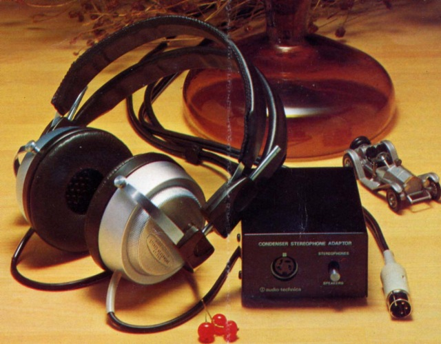
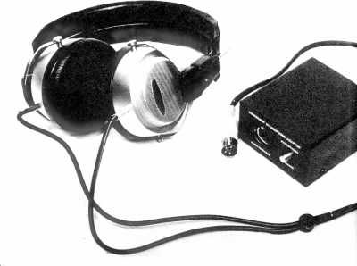
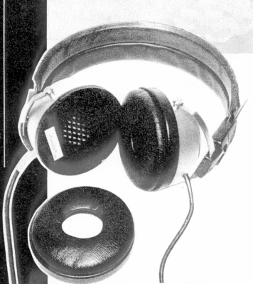
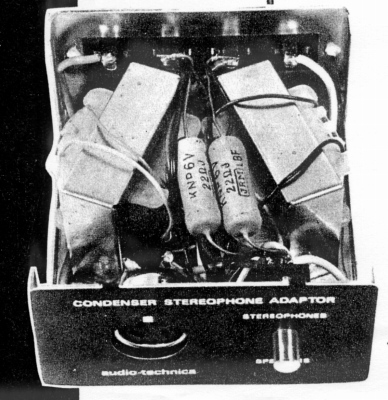
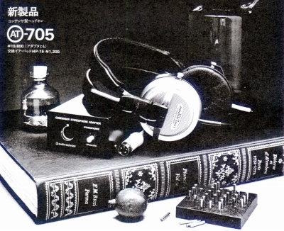
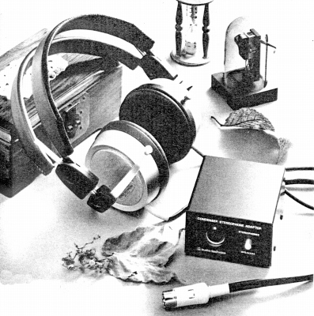

AT-705




■価格 19,800円
■型式 エレクトレットコンデンサー型オープンエアタイプ
■振動板
■インピーダンス
■再生周波数帯域 10-25,000Hz
■許容入力
■感度 98dB±2dB/mW at1kHz
■コード 1.9ｍ特殊ソフトコード
■重量 250g（コード含まず） アダプター570ｇ
■発売 1974年
■販売終了 1977年頃
■備考 アダプター昇圧比 36dB
アダプター外寸（�o） 45×77×85
最大音圧レベル 110dB/SPL

